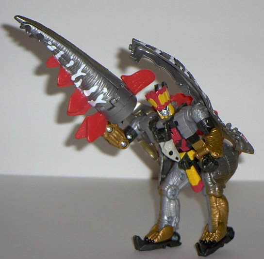
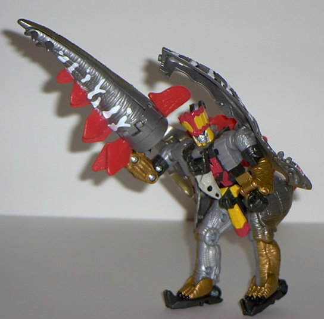

(NOTE: Because this is a repaint, this is not a full-blown review. This mainly covers any changes made to the mold and the color scheme, and merely compares it to Dinobot Striker. For a review on the mold itself, read the review of Dinobot Striker here .)
Snarl here, like most
of the other Transformers: Dinobots, has a color scheme reminiscent of
the original G1 Dinobots (silver/gray and gold), not to mention the same
name as his associated G1 Dinobot. I really like the improvements made
to his color scheme- the silver and gold work very, very well together,
and the white and black stripes are nice too. In robot mode, the color
scheme doesn't fit together QUITE as well- the dark military green and
yellow and red right next to each other don't fit- but other than that,
it's still awesome. I guess the only major thing I would have changed is
the dark military green to black- it would have fit better with the red
and yellow. Otherwise, definitely the best color scheme out of the Dinobot
bunch. Although I do NOT like that Autobot insignia on his forehead...
No mold changes have
been made to Snarl from his previous incarnation, Striker, so he retains
all the features and flaws of his predecessor in that area.
Not only is Snarl the
best Dinobot out of this group toy-wise, but his color scheme is improved
from the toy's previous incarnation as well, and he's overall cheaper to
boot. Sounds like a winner to me.
No Stats
Review by Beastbot